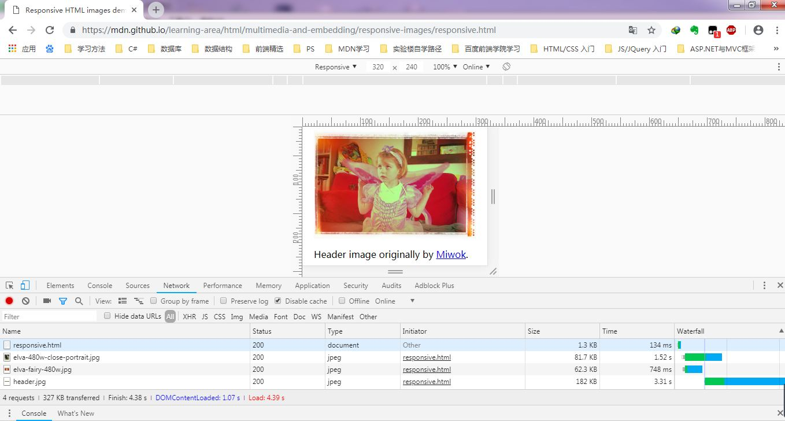
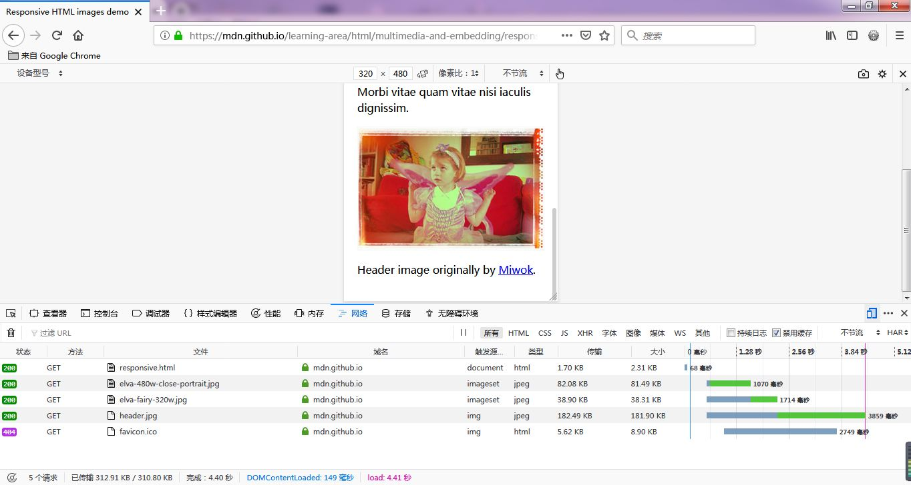
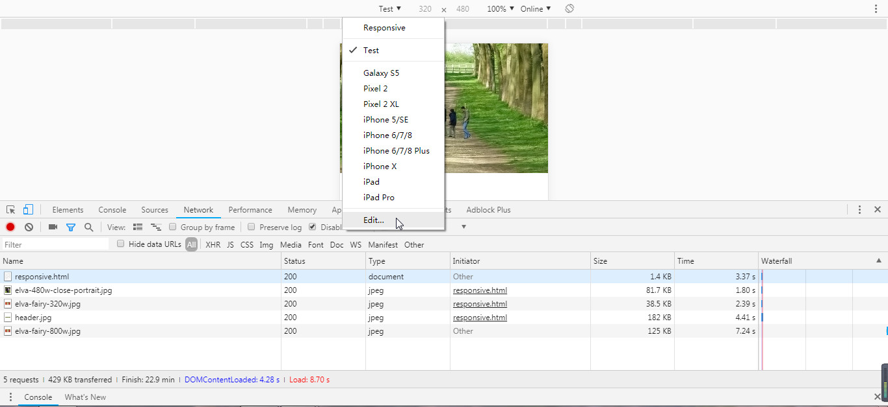
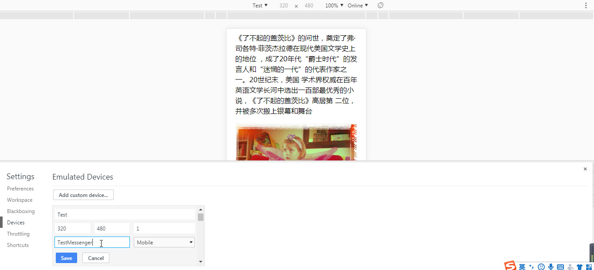
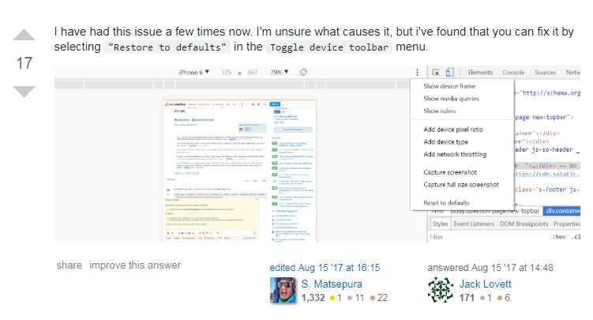
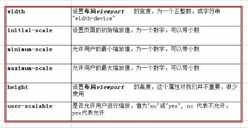
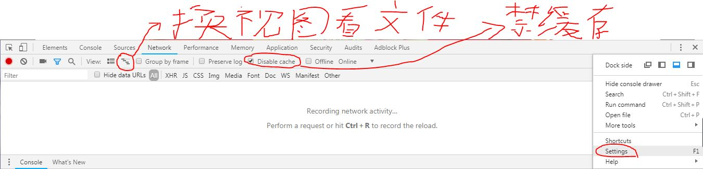

5-响应式图片
任务目标：
- 学习如何使用 srcset 以及 <picture> 元素，来实现网页中的响应式图片处理方法。
前提（必须添加）：<meta name="viewport" content="width=device-width">（记住了！！！）
响应式照片：在不同屏幕尺寸和分辨率中都能保持特性良好工作的图片。


body {
width: 100%;
max-width: 1200px;
margin: 0 auto;
background-color: white;
}
width: 100%;
max-width: 元素的最大宽度。1200px;
- 视口<1200px，正文元素宽度=视口宽度
- 视口>=1200px，正文元素宽度=1200px
margin: 0 auto;（水平居中：设置对象上下间距为0，左右自动。你看第一张图两边留灰色背景就明白了）
- 让DIV在浏览器中水平居中。兼容各大浏览器让布局居中。
- 布局居中、水平居中，均加入margin:0 auto即可。（假如一个DIV我们设置宽度为500px，然后设置margin:0 auto样式后，假如你浏览器窗口宽度为1000px宽，这个时候此DIV靠左和靠右间距为（auto）这个时候浏览器会自动辨析DIV靠左和靠右各250px宽度间距，此时这个DIV盒子自然而然就水平居中浏览器中。）
img {
display: block;
margin: 0 auto;
max-width: 100%;
}
max-width: 100%;（ 以父级块级容器宽度的百分比作为最大宽度。） 如果body元素比图像更小，图像就开始缩小，这样图像总是在正文里，而不是溢出正文。就是说：（父元素比子元素大时）子元素的宽最多是自己原始的宽，（父元素比子元素小时）子元素的宽是父元素的宽。
两个问题
图片最佳用法问题（图片裁剪问题）：不同尺寸大小的屏幕要显示不同版本（裁剪版本和原版）的图片
分辨率切换问题（大图失真问题）：大的位图在小屏幕显示会被放大，这会使位图失真。（还会浪费带宽， 网站的成败与否加载速度是其中主要因素之一）PS：分辨率指的是纵横方向的像素数目（像素点），例如纵向像素*横向像素，如1920px*1080px，单位是像素px ， 或者说总数：例如"640乘480"，横向640像素和纵向480像素 ，总数为640 × 480 = 307,200像素（30.72万像素）。“像素”只存在于计算机显示领域，所以PC和手机、图片都是用这个，图片尺寸的是横向像素*纵向像素！（换句话说相同的图片分辨率在不同的屏幕尺寸影响图片清晰度）。
分辨率切换问题解决方案（图片简单用SVG,不然使用以下方案）
1、根据不同视口宽度的设备（视口横向像素点）选择不同尺寸的不同分辨率的图——>需要sizes属性 一句话：你的设备屏幕宽度变化，我的图片尺寸也跟着变。
srcset属性与sizes属性（兼容性好，放心使用，还有src保底）：
<img srcset="elva-fairy-320w.jpg 320w,
elva-fairy-480w.jpg 480w,
elva-fairy-800w.jpg 800w"
sizes="(max-width: 320px) 280px,
(max-width: 480px) 440px,
800px"
src="elva-fairy-800w.jpg"
alt="Elva dressed as a fairy">
先看sizes的媒体条件（媒体条件是按顺序判断的。""表示一个值，以空格分隔，逗号分隔值列表，括号包着的是媒体查询。以第二个举例）
sizes="(max-width: 320px) 280px,
(max-width: 480px) 440px,
800px"
(max-width: 480px) 即设备视口横向像素点<=480px时（手机设备是480p以下的的屏幕），会给一个440px的槽（图像要填充的槽，为什么槽要小于设备视口宽度40px：因为怕图片溢出，所以可以解释为宽度限制），
接着去srcset列表找最接近槽大小的图片，以后写槽大小要与图片实际大小w相匹配（只能<=图片实际大小w，但绝不能大于图片实际大小（记住了！！！））
srcset="elva-fairy-320w.jpg 320w,
elva-fairy-480w.jpg 480w,
elva-fairy-800w.jpg 800w"
w表示图片的真实宽度，因为480w最接近440px,所以设备会加载 elva-fairy-480w.jpg 图片
步骤：1、img元素的sizes属性媒体条件匹配视口宽度。2、给槽。3、找srcset（图像集）属性最接近槽大小的w,加载对应图片。
例子总结：设备视口宽度是480px以下的，加载480w的图片，所有媒体条件不为真时，加载800w的图片。
2、根据不同分辨率的设备选择相同尺寸的不同分辨率的图——>不需要sizes属性 一句话：你的设备屏幕分辨率变化，我的图片分辨率也跟着变，但是图片尺寸不变。

HTML代码：
<img srcset="elva-fairy-320w.jpg,
elva-fairy-480w.jpg 1.5x,
elva-fairy-640w.jpg 2x"
src="elva-fairy-640w.jpg"
alt="Elva dressed as a fairy">
CSS代码（固定尺寸，代表图片宽度为一个CSS像素—320px）：
img {
width: 320px;
}
x：设备像素=图片像素/屏宽像素，浏览器选择最接近显示器像素密度的那一张。
（例：屏宽320px，2x显示器
三张图：small.jpg(500 px), medium.jps(1000px) 以及 large.jpg(2000px)
浏览器就替你速度算一下
500 / 320 = 1.5625
1000 / 320 = 3.125
2000 / 320 = 6.25
浏览器选择加载medium.jps(1000px)的照片）
一个设备像素（代表一个CSS像素或者说代表一个图片宽度）:标准/低分辨率选择elva-fairy-320w.jpg（没写，默认1x），
两个以上设备像素（代表两个以上CSS像素或者说代表两个以上图片宽度）：高分辨率选择elva-fairy-640w.jpg（2x）。
640px的图像大小为93KB，320px的图像的大小为39KB。
图片最佳用法问题解决方案（picture、source、media、srcset）


<picture>
<source media="(max-width: 799px)" srcset="elva-480w-close-portrait.jpg">
<source media="(min-width: 800px)" srcset="elva-800w.jpg">
<img src="elva-800w.jpg" alt="Chris standing up holding his daughter Elva">
</picture>
media属性：媒体条件，条件返回真显示srcset的图片。
视口宽度<=799px，显示elva-480w-close-portrait.jpg，窄屏显示裁剪版本图片；
视口宽度>=800px,显示elva-800w.jpg，宽屏显示显示原版图片 。
使用media属性，sizes属性不可以也有媒体条件！！
srcset属性：图片路径。
img元素：1、必须添加，否则无法显示图片！2、浏览器不兼容时做备选图片。
步骤：1、<picture>下source元素的 media属性媒体条件匹配视口宽度。2、找srcset（图像集）属性的图片
为什么不用CSS或JavaScript
HTML会预先加载，平均来说比CSS、JavaScript加载速度快20%。
在source元素中添加type属性，例如：type="image/svg+xml"或type="image/webp"
作业疑问：


自己做的，因为没有请求，下载不了（已经在本地了）这张小女孩的图。（可以理解）
但是，谷歌浏览器开发者工具和火狐浏览器开发者工具在响应式设计模式中网络（Network）下载的图片竟然是不一样的（elva-fairy-480w.jpg和elva-fairy-320w.jpg）？为什么？320显示elva-fairy-480w.jpg,321显示elva-fairy-800w.jpg。
原因：谷歌浏览器开发者工具响应式设计模式每次改变视图宽度或高度都会改变比例，例如：50%，75%，100%，
解决办法：


参考（灵感来源）：
https://stackoverflow.com/questions/40810720/how-to-stop-chrome-responsive-inspector-from-changing-the-zoom（stackoverflow固定响应式设计窗口的3种解决方案）：
1、拖动侧边栏
2、Reset to default

3、移动端设备设置viewport的tag（移动端固定视口比例，不支持缩放）：
<meta name="viewport" content="user-scalable=no, initial-scale=1, maximum-scale=1, minimum-scale=1, width=device-width, height=device-height, target-densitydpi=device-dpi" />
height=device-height, target-densitydpi=device-dpi(可不要)：
<meta name="viewport" content="width=device-width, initial-scale=1, maximum-scale=1, minimum-scale=1,user-scalable=no />
课外扩展：
像素，为视频显示的基本单位，译自英文“pixel”，pix是英语单词picture的常用简写。像素的大小是没有固定长度值的，不同设备上1个单位像素色块的大小是不一样的。
测试显示器像素密度的网址： https://webkit.org/demos/srcset/


移动设备默认的viewport是布局viewport 移动设备网站的开发 需要的是理想viewport，移动端设备设置viewport的tag： <meta name="viewport" content="width=device-width, initial-scale=1.0, maximum-scale=1.0, user-scalable=no">

谷歌开发者工具调试小教程：
https://jingyan.baidu.com/article/bad08e1eebf4fe09c9512171.html（怎样使用最新版谷歌测试响应式页面）
https://segmentfault.com/a/1190000011868916（web调试优化-chrome开发者工具不完全指南）
https://blog.csdn.net/jim8757/article/details/52710573（Chrome调试前端页面的若干技巧）
https://segmentfault.com/a/1190000000581601（使用Chrome测试页面响应性）
https://my.oschina.net/laoliu66/blog/910932（前端人员必备技能--Chrome浏览器的开发者工具 ）
https://www.w3cplus.com/blog/859.html（w3cplus 浏览器开发工具的秘密）
https://blog.csdn.net/Milogenius/article/details/78897745（Chrome（谷歌）浏览器调试教程珍藏版-JS调试）
响应式设计小教程：
https://juejin.im/post/5a5093bd6fb9a01c9b65c3c2（浅谈响应式Web设计与实现思路）
http://www.jmouse.cn/project/Grid.htm（一个简单的响应式设计指南）
http://www.jmouse.cn/?p=556（前端小工具集）
http://blog.jobbole.com/68577/（谷歌 Web 开发最佳实践手册（1.2）：响应式网页设计模式）
参考资料网址：
http://www.divcss5.com/rumen/r773.shtml（DIVCSS布局）
https://segmentfault.com/q/1010000010151120（思否 img元素的max-width属性的百分比问题）
https://www.zhihu.com/question/21149600（知乎 分辨率和像素是什么关系？）
https://blog.csdn.net/isomebody/article/details/72877652（屏幕尺寸、分辨率、像素密度及其三者之间的关系）
https://blog.csdn.net/Phil_Young/article/details/53729252（译 CSS3的srcset size属性1x 2x 3x）
https://www.jianshu.com/p/c3387bcc4f6e# （简书 （全解析）屏幕尺寸，分辨率，像素，PPI之间到底什么关系？）
https://www.jianshu.com/p/607567e488fc（简书 img 的 srcset、sizes 属性和 picture 元素）
https://blog.csdn.net/wuyou1336/article/details/73863071（响应式图片 srcset 和sizes属性）
https://blog.csdn.net/caimaomaocai/article/details/79799034（关于srcset，picture，size）
https://blog.csdn.net/u014711690/article/details/79750505（响应式图片新属性srcset、sizes及、、media的有效性测试）
https://segmentfault.com/a/1190000004254111（思否 image的srcset属性）
https://segmentfault.com/a/1190000004411869（思否 译 响应式图片— srcset 和 sizes 属性）
零碎（不怎么重要）：
https://blog.csdn.net/laijieyao/article/details/42870737（响应式设计时如何自动阻止移动浏览器自动调整页面大小）
https://blog.csdn.net/iefreer/article/details/24384215（响应式设计：如何使区块保持比例自动缩放）